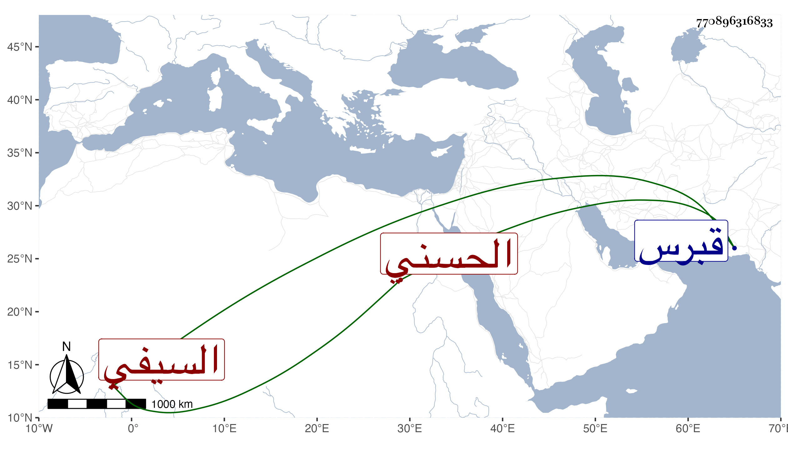

0902Sakhawi.DawLamic.ITO20230111-ara1.EIS1600.770896316833
Biography ID: 770896316833
144
تغرى برمش السيفي قراقجا الحسني ، أصله من سبي قبرس سنة سبع وعشرين وملكه قراقجا المذكور فأعتقه ورقاه حتى جعله دواداره ثم صار بعده خاصكيا إلى أن أنعم عليه الظاهر خشقدم بامرة عشرة وجعله من رؤس النوب لأياد كانت له عنده ودام إلى أن مات بالفالج في ذي الحجة سنة سبعين وقد قارب الستين ودفن من الغد وحضر السلطان الصلاة عليه بمصلى المؤمني .
